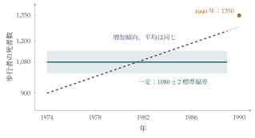

STEP I 1992、第14問
先に進む前に問題を読んでおこう。問題は STEP Support Programme の問題データベースにある： step.maths.org/questions/92-s1-q14
導入
統計学（statistics）とはデータから学ぶための科学であり、その最初の教訓は「数字はそれ自体では何も語らない」ということである。「6倍安全」「憂慮すべき増加」「惨事が増えている」。見出しは毎日のように数字を主張に変えている。そしてその主張は、しばしば誤っている。数字そのものが偽りだからではない。比較の相手を間違えていたり、ごく普通の偶然による変動を傾向（trend）と取り違えたりしているからである。
この問題には式がまったく含まれておらず、STEP としては珍しい。求められているのは、統計学者のように考えることである。それぞれの見出しを正当化するには何を知る必要があるのか。偶然だけでどの程度の変動が見込まれるのか。答えにはポアソン分布（Poisson distribution）（第 12.18 節）を用いる。そしてここでの推論は、この章の残りすべての土台となる。
取りかかる前に
死亡が一定の割合で、互いに独立かつランダムに起こるとすれば、年間の総数はどの程度ばらつくはずだろうか。平均が年 \(1080\) 人であるとき、年ごとの典型的なずれはどれくらいか。
互いに独立な稀な事象の回数は、近似的にポアソン分布に従う。平均 \(\mu\) のポアソン分布に従う回数の分散（variance）は \(\mu\)、標準偏差（standard deviation）は \(\sqrt\mu\) である。\(\mu = 1080\) のとき標準偏差はおよそ \(33\) であり、年間の総数がおよそ \(1015\) から \(1145\) の間にあれば、特に目立つことではない。
順を追って解く
段階 1 「歩くより飛行機のほうが6倍安全」
歩行者の死者は年 \(1080\) 人、航空機事故の死者は年 \(180\) 人である。正確には、何が6倍なのか。
この見出しは死者の総数を比べている。しかし安全性とはリスク（risk）、すなわち曝露の単位あたりの死者数の問題である。ほとんどの人は毎日歩くが、飛行機に乗る人は比較的少なく、乗るとしてもたまにである。公正な比較には、移動距離1キロメートルあたり、移動時間1時間あたり、あるいは1回の移動あたりの死者数を用いるべきであり、これらはまったく異なる答えを与えうる（空の旅は1キロメートルあたりでは非常に安全だが、1回の移動あたりではそれほど際立って安全ではない。航空機事故の死者の大部分は離陸時と着陸時に生じるからである）。与えられた数値からは、相対的な安全性について何も「証明」できない。また、「道路交通事故で死亡した歩行者」は狭い区分であり、道路での死者全体はこれよりはるかに多い。
段階 2 「空はより安全に：1990年の死者はわずか125人」
航空機事故による死亡は、互いに独立な稀な事象のようなものだろうか。年間の総数はどの程度ばらつくと考えられるか。
航空機事故による死亡はまとまって起こる。1回の墜落で数百人が亡くなることもある。そのため年間の総数は主に墜落の回数で決まり、その回数は小さいので、総数は年ごとに極めて大きくばらつく。平均 \(180\) 人に対して \(125\) 人という1年があっても、何も変化していないこととまったく矛盾しない。墜落がもう1回あれば、数字はがらりと変わっていたはずである。1年分のデータで傾向を示すことはできない。
段階 3 「道路の惨事が増加：火曜日に7人死亡」
平均すると、1日に何人の歩行者が亡くなっているか。1日の死者数がポアソン分布に従うなら、1日に \(7\) 人以上という日はどのくらいの頻度で見られるか。
平均は1日あたり \(\frac{1080}{365} \approx 2.96\) 人の歩行者の死亡である。1日の回数がこの平均のポアソン分布に従うなら \(\mathrm{P}(\geq 7) \approx 0.031\) であり、純粋に偶然だけで、1年のうちおよそ \(11\) 日は歩行者の死者が \(7\) 人以上となる。（しかも「道路の惨事」にはおそらく運転者や同乗者も含まれるので、1日に道路で \(7\) 人が亡くなることはなおさら目立つことではない。）1日だけでは傾向について何もわからない。この見出しは、ばらつきの大きい系列から極端な値を拾い出しており、典型的な誤りである。
段階 4 「憂慮すべき増加：1990年の歩行者の死者は1350人」
\(1350\) をポアソン分布の標準偏差と比べてみよ。これは単なる偶然だろうか。そうでないなら、ほかに何が説明になりうるか。そしてそれは「憂慮すべき増加」と言うに値するか。
ここが本題である。一定のポアソンモデルのもとでは、\(1350\) は平均 \(1080\) より \(270\) 大きく、これは標準偏差のおよそ \(8\) 倍にあたる。偶然である可能性は極めて低い。したがって、何かが変化したと考えられる。しかし、この見出しはいくつかの点で依然として言い過ぎである。
平均に隠された傾向。\(1080\) という数値は \(16\) 年間の平均である。もし死者数が1974年のおよそ \(900\) 人から1989年のおよそ \(1260\) 人まで着実に増えていたとしても、平均はやはり \(1080\) となり、1990年の \(1350\) は既存の傾向がそのまま続いただけであって、突然の「憂慮すべき」増加ではない（図 13.1.1）。年ごとの数値が必要である。
曝露。人口の増加、歩く機会の増加、交通量の増加、あるいは高齢化は、いずれも1回の移動あたりで道路が危険になっていなくても死者を増やす。1人あたり、あるいは歩行距離1キロメートルあたりの割合こそが適切な尺度である。
定義。死亡の記録方法や分類方法の変更（たとえば、事故から何日以内の死亡を数えるか）によって、数値が跳ね上がることがある。
過分散（over-dispersion）。現実の年間の回数は、天候や経済活動などの条件が変動するため、ポアソンモデルが示すよりも大きくばらつく。「標準偏差の \(8\) 倍」はある程度慎重に扱うべきである。
増加はおそらく本物である。しかしそれが憂慮すべきものかどうか、そして何が原因かを判断するには、さらにデータが必要である。

振り返り
同じ条件のものどうしを比べる。リスクには分母が必要である。1人あたり、1キロメートルあたり、あるいは1回の移動あたりの死者数である。
自然な変動を知る。ポアソン分布によるばらつき、そしてまとまって起こる事象のはるかに大きなばらつきを知っていれば、どのような変化が注目に値するかがわかる。
平均は傾向を隠す。ただ1つの要約値では、ある量が時間とともにどう変化してきたかを記述できない。
背後にある数学
シグナルとノイズ
統計学の問いはすべて、突き詰めればシグナル（signal、本当の効果や傾向）をノイズ（noise、ランダムな変動）から切り分ける問題である。ポアソンモデルは、互いに独立な事象の回数に含まれるノイズを測る物差しを与える。すなわち標準偏差 \(\sqrt\mu\) である。稀な事象は相対的な変動が大きい。\(9\) という回数はおよそ \(\pm3\)、つまりその大きさの3分の1ほど変動するが、\(10\,000\) という回数の変動はわずか \(1\%\) ほどである。小さな数（1日の死者数、1年の墜落回数）がしばしば過大に解釈されるのも、小さな町でのがんの「集積」がたいてい偶然だと判明するのも、このためである。
平均への回帰
さらにもう1つ落とし穴がある。交通安全カメラは、直前の1年間に異常に事故が多かった場所に設置されることが多い。翌年に事故が減ると、カメラの手柄とされる。しかし異常に悪い年の後には、いずれにせよもっと普通の年が続く可能性が高い。これが平均への回帰（regression to the mean）であり、1880年代にゴルトン（Galton）が初めて記述したものである。カメラの効果を平均への回帰から切り分けるには、カメラが設置されなかった同様の場所と比較する必要がある。これが対照実験（controlled experiment）の背後にある考え方である。
クリミア戦争での看護師として名高いナイチンゲール（Florence Nightingale）は、先駆的な統計学者でもあった。1858年の彼女の「鶏頭図（rose diagram）」は、負傷よりも予防可能な病気で亡くなる兵士のほうがはるかに多いことを示し、政府を説得して陸軍の衛生制度を改革させた。彼女は生の総数ではなく割合（兵士1000人あたりの年間死者数）を用いること、そして同じ条件のものどうしを比べることを強く主張した。これはまさにこの問題が問うている点である。彼女は王立統計学会（Royal Statistical Society）のフェローに選ばれた最初の女性であった。
思考のスキル
統計的な主張を受け入れる前に、何と比べているのか、分母は何か、偶然だけでどの程度の変動が見込まれるのかを問え。
大学の統計学の講義では、これらの問いが精密な手法へと形を変える。仮説検定（hypothesis test）は観測結果が偶然と矛盾しないかどうかを問い、信頼区間（confidence interval）はある量がどれほど精密に測定されたかを示し、実験計画（design of experiments）は比較が公正であることを保証する。
次の一歩
ポアソン分布の裾。\(X\) が平均 \(2.96\) のポアソン分布に従うとき、\(\mathrm{P}(X \geq 7) \approx 0.031\) であることを確かめよ。歩行者の死者が \(9\) 人以上となる日は、1年に何日あると期待されるか。
まとまって起こる死亡。航空機の墜落が年 \(1.2\) 回のポアソン過程（Poisson process）として起こり、1回の墜落ごとに \(150\) 人が亡くなるとする。航空機事故による年間死者数の平均と標準偏差を求めよ。死者が \(125\) 人以下という年は珍しいか。死者がちょうど \(125\) 人という年はありうるか。
有意な増加か。1974–1989年の数値が \(1080 \pm 33\) で一定であったとすると、ある1年に \(1350\) 人以上となる確率を（正規近似（normal approximation）を用いて）求めよ。
よりよい見出しを書く。4つの見出しそれぞれについて、データが実際に裏づける見出しを書け。
さらに学ぶために
David Spiegelhalter, The Art of Statistics（Pelican）。データから学ぶ方法を、ニュースからの多くの例とともに解説する。
Tim Harford, How to Make the World Add Up（Bridge Street）。メディアに現れる数字について考えるための10のルール。
Darrell Huff, How to Lie with Statistics（Penguin）。1954年に書かれた短い古典で、今なお色あせない。